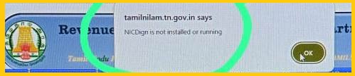
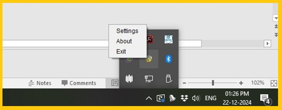
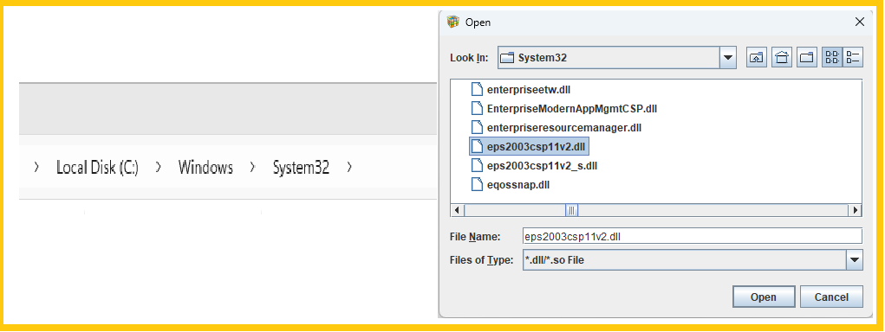
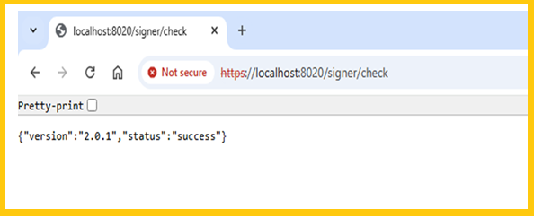
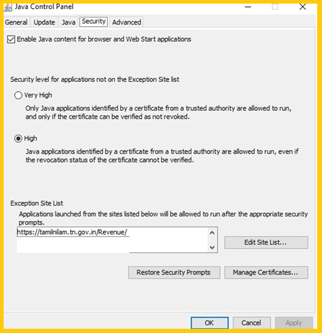
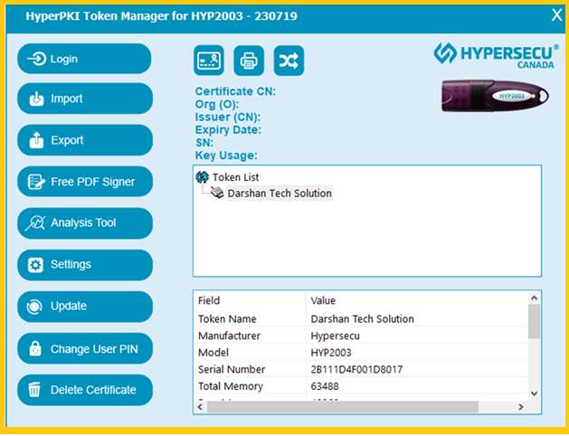

Darshan Tech Solution
NICDsign is not running or installed
YouTube Video
How to solve- NICDsign is not running or installed error in Tamil Nilam portal

1. Make Sure the below software’s are installed
- Java 8
- NICDsign
- DSC Token Software
2. Right Click on NICDsign and then Setting

3. Choose the Token Driver and Browse, C:/Windows/System32/eps2003csp11v2.dll

4. Open Chrome Browser, type https://localhost:8020/signer/check .
If ask advance click it and then Proceed

5. Go to Control panel ---> Java---->Security---> Edit Site List ---> Add Exception Site TAMILNILAM Site

6. Go to Token Maneger and Verify the DSC token is inserted

7. Now do the sign the error now solved
Follow on my Social Media